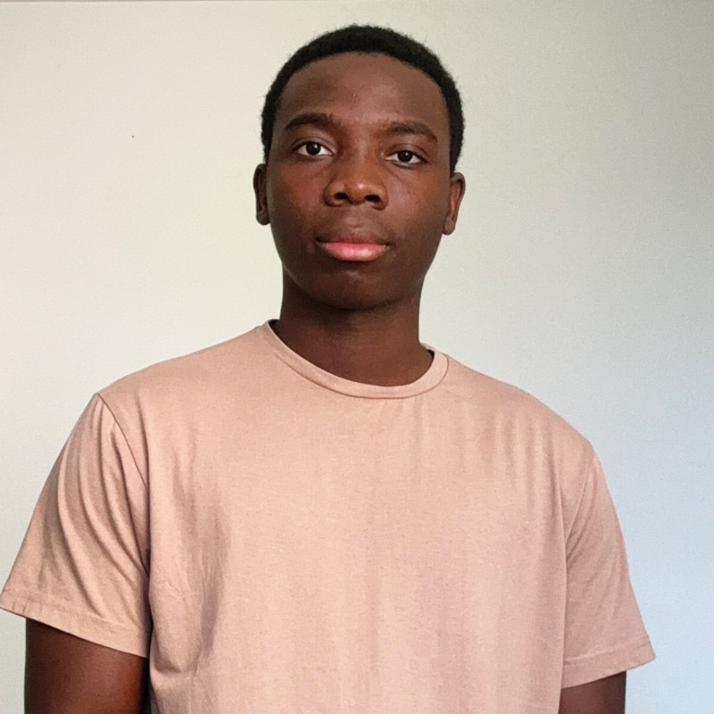
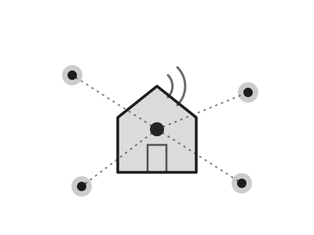
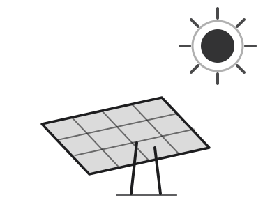
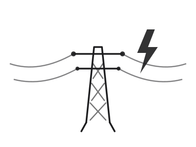

01 — IoT & Domotique
Le bâtiment
qui se pilote.
Intégration Smart Home, Smart Building et Smart City. Choix des produits, tests terrain, supervision GTB.
- Zigbee
- LoRaWAN
- KNX
- Jeedom
- GTB/GTC
Ingénierie des bâtiments communicants
Du capteur au tableau de bord. IoT, énergie renouvelable et réseaux électriques, réunis dans une même chaîne technique.

Lyon, Auvergne-Rhône-Alpes
Expertise



01 — IoT & Domotique
Intégration Smart Home, Smart Building et Smart City. Choix des produits, tests terrain, supervision GTB.
02 — Énergie renouvelable
Systèmes photovoltaïques et monitoring énergétique. Dimensionnement, maintenance, analyse de production.
03 — Réseaux électriques
Études d'infrastructures basse et haute tension, cartographie SIG et maintenance industrielle.
Aujourd'hui
Intégration de solutions Smarthome, Smartbuilding et Smartcity. Sélection et tests de produits Zigbee et LoRaWAN, création de tableaux de bord énergétiques, support d'installations GTB.
Master 2 Ingénierie Durable des Bâtiments Communicants Intelligents, ISTIC Rennes.